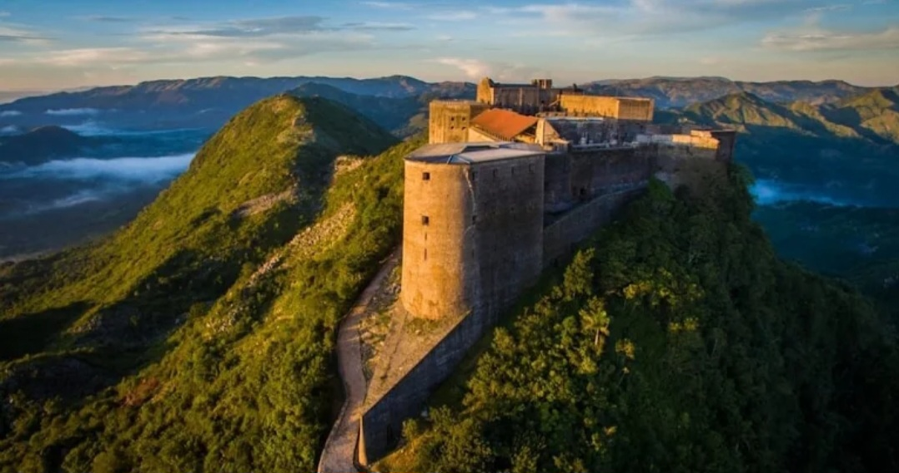
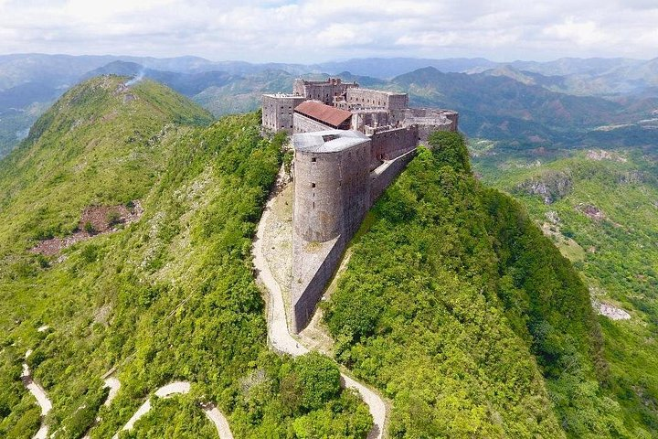
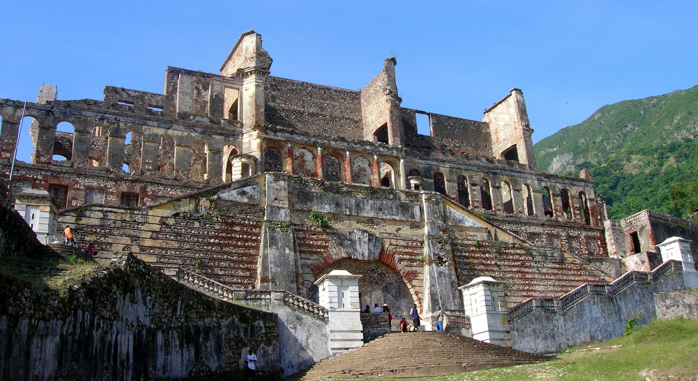
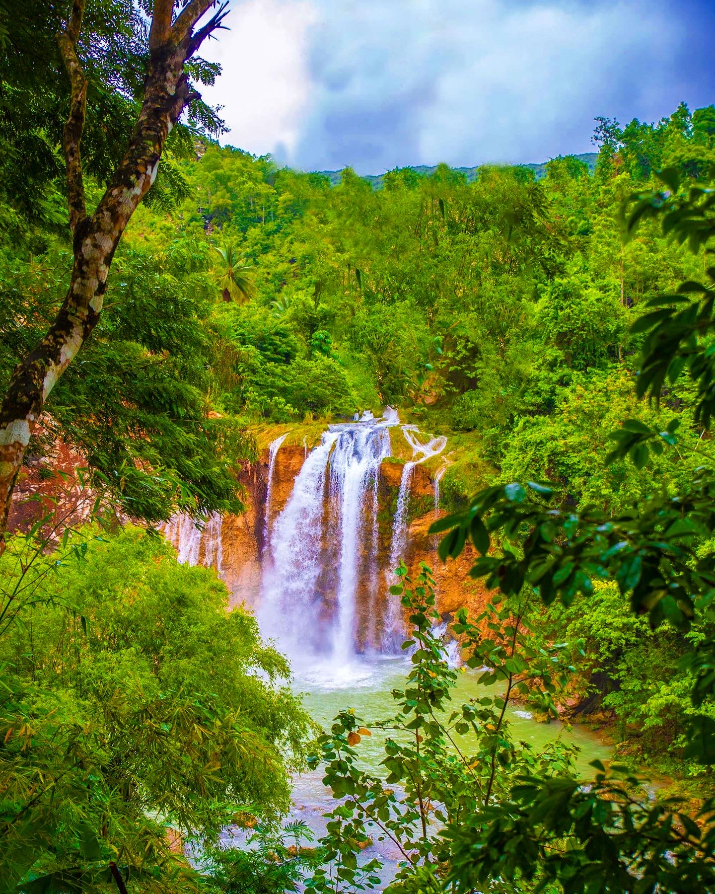
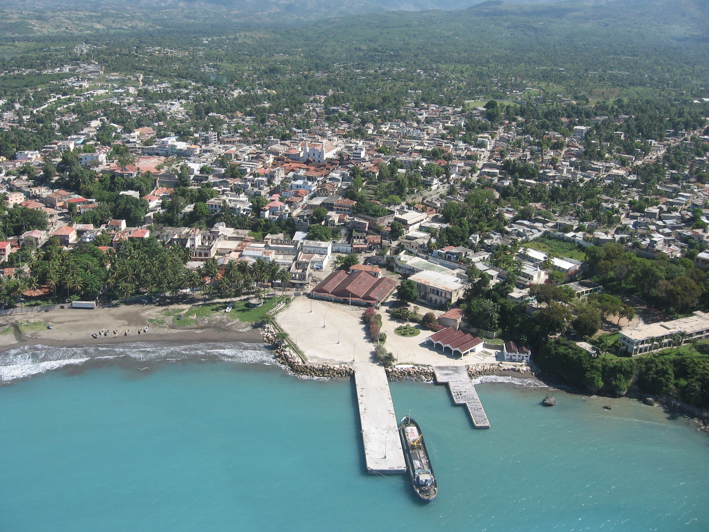

Terres et mémoires
Haïti ne se raconte pas en une seule image. Chaque lieu porte plusieurs couches de mémoire — précoloniale, coloniale, révolutionnaire, contemporaine — que ce site propose de traverser plutôt que de simplement énumérer.
Quatre strates pour lire le patrimoine haïtien
Plutôt qu'un découpage strictement géographique, les destinations présentées ici sont organisées par strate patrimoniale — une même région pouvant relever de plusieurs strates à la fois.

Résistance & Indépendance
Citadelle Laferrière, Vertières, forts de Kenscoff — les lieux qui ont fait naître la première république noire indépendante.

Architecture & Villes
Sans-Souci et Jacmel, où le bâti raconte le faste royal et la prospérité marchande du XIXe siècle.

Nature & Territoire
Bassin Bleu, Parc La Visite, Île-à-Vache — la diversité de paysages d'un petit territoire aux reliefs contrastés.

Croyances & Traditions
Un patrimoine immatériel vivant, transmis à travers les fêtes, les récits et les savoir-faire régionaux.